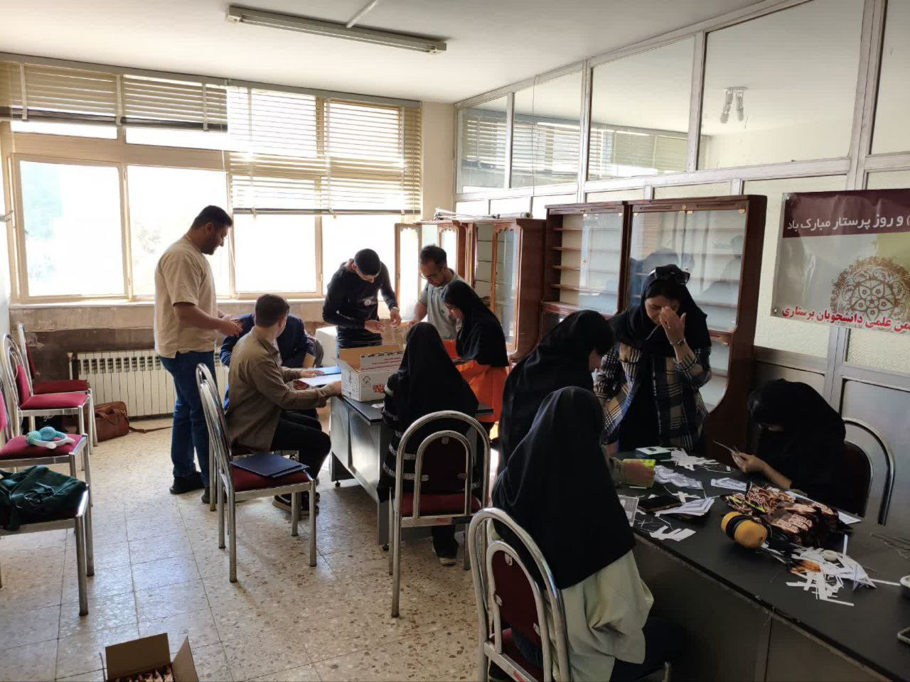
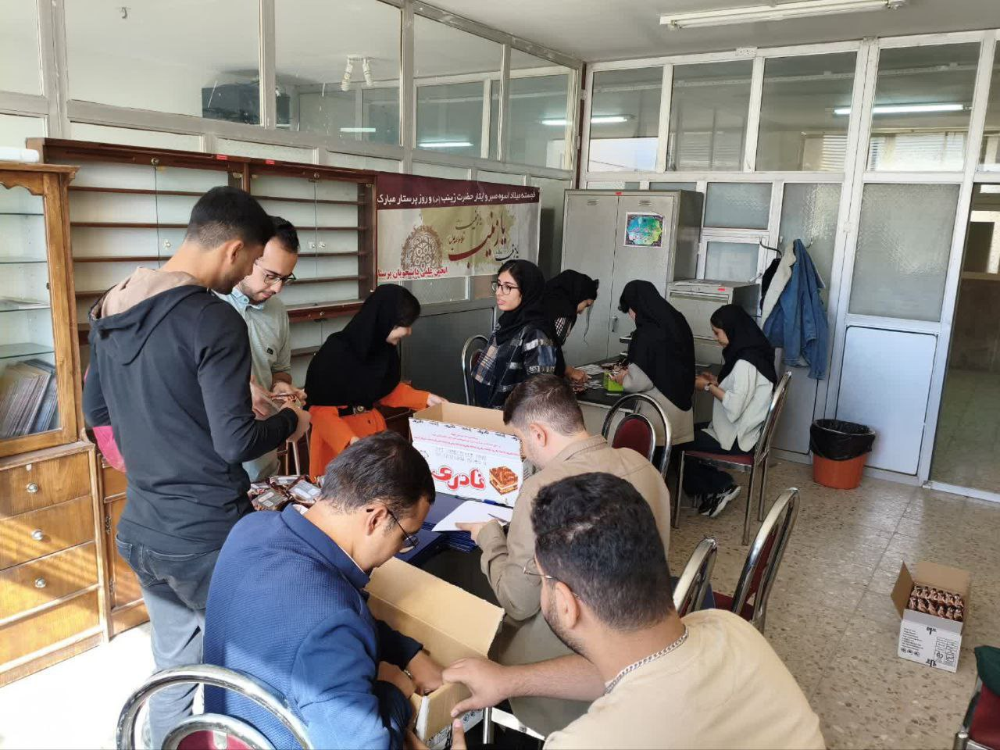
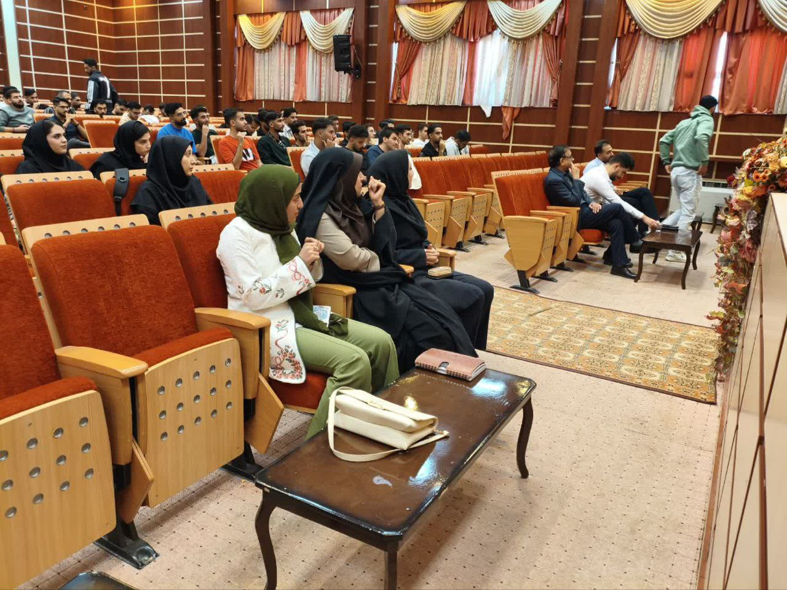
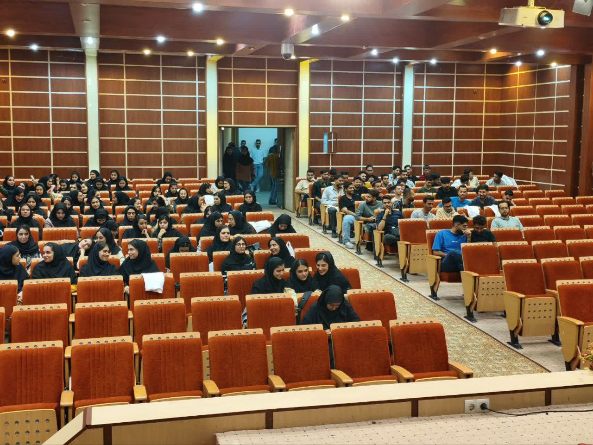
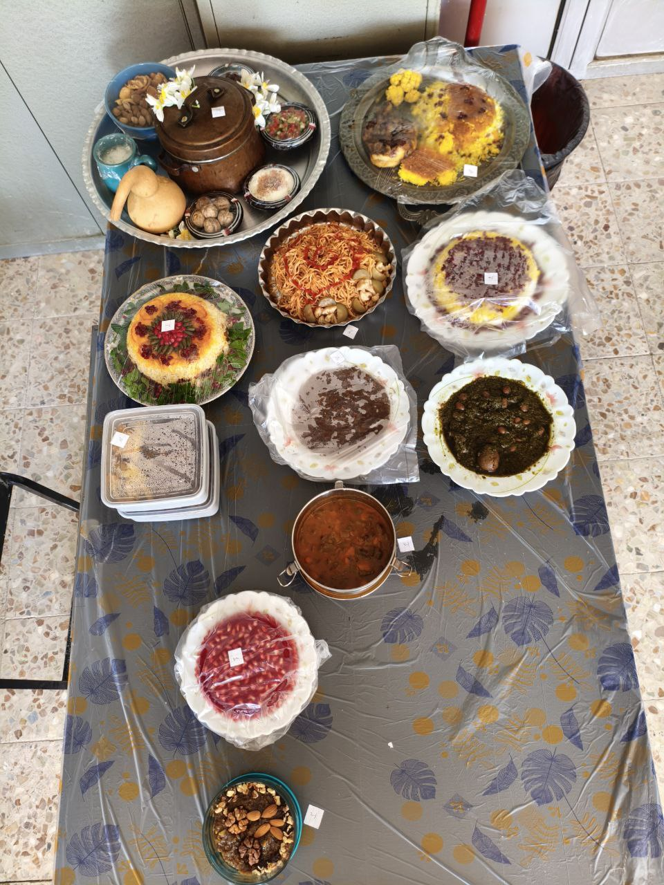
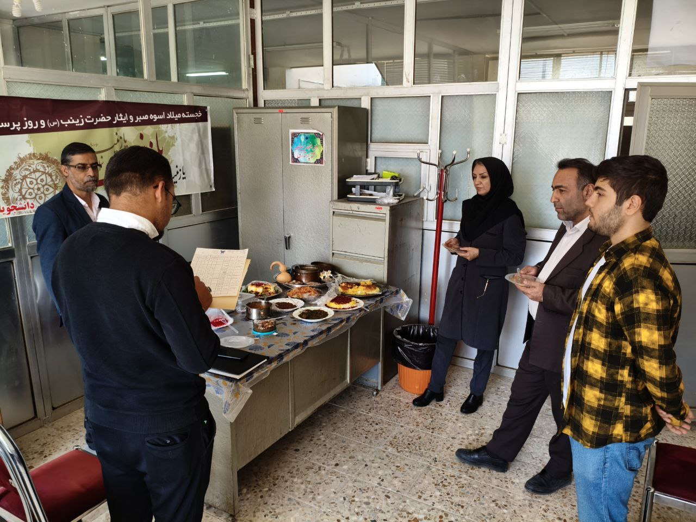
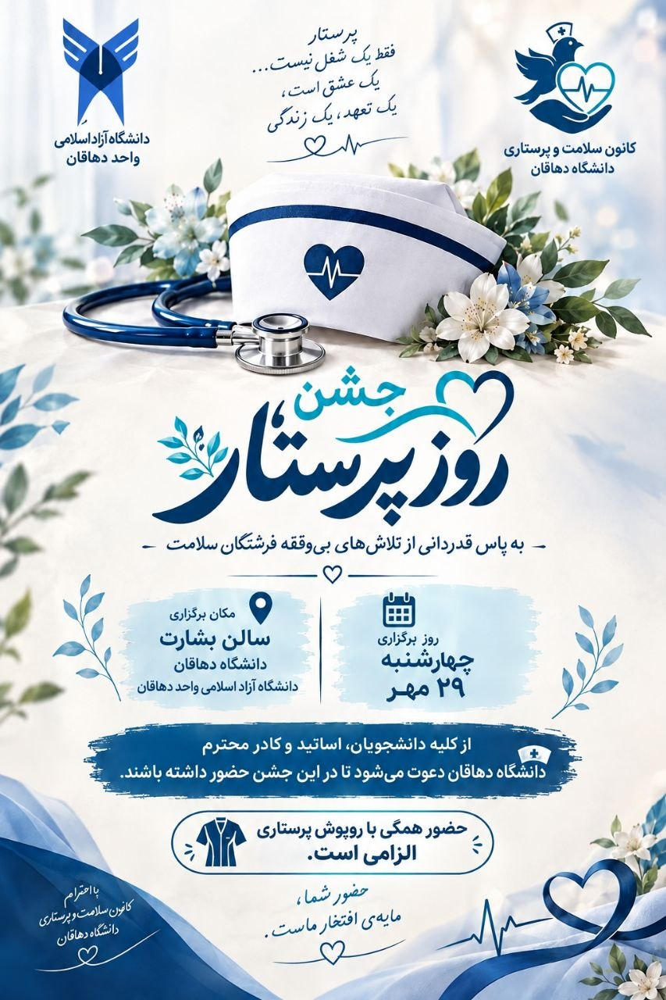

لحظههایی از تلاش، همدلی و شادی اعضای کانون سلامت و پرستاری.
پشت صحنهی تلاش و همدلی اعضا برای برگزاری هرچه بهتر جشن.


لحظههای شاد و بهیادماندنی جشن روز پرستار در کنار اعضای کانون.


رقابتی گرم و خوشطعم میان اعضای کانون؛ لحظههایی پر از خلاقیت و انرژی.


طرح گرافیکی کانون سلامت و پرستاری به مناسبت روز پرستار.

لحظههای گرم و صمیمانهی تبریک روز پرستار از طرف اعضای کانون.